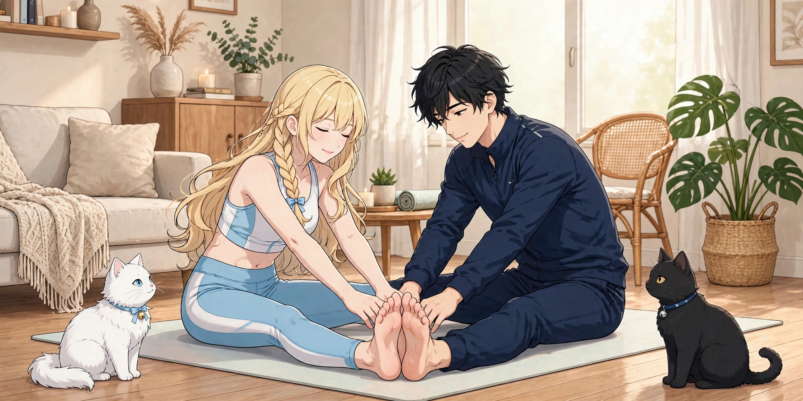
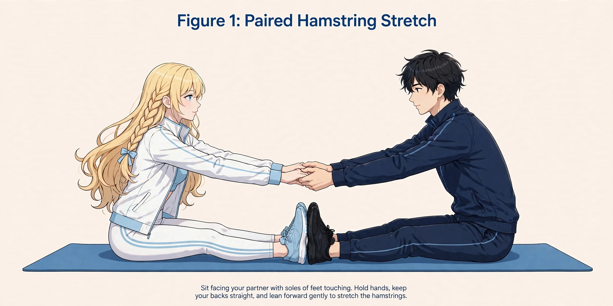
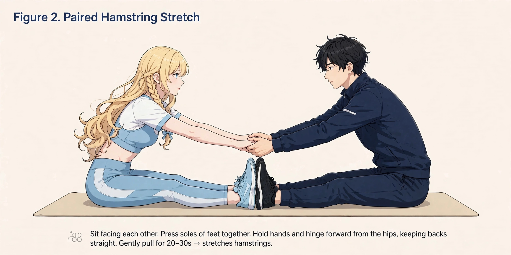

ペア脚ストレッチ｜太もも裏を伸ばし合う（ペア）

やり方1：向かい合って座り、足裏を合わせる（図1）
- 二人で向かい合って座り、両脚をまっすぐ前に伸ばします。足裏同士をぴったり合わせてください（図1）
- お互いの手を取り合います。膝は少し曲がっていて大丈夫です。膝を無理に伸ばそうとしないでください
- 背筋を伸ばして座ります。背中が丸まっていると、太もも裏より腰に力が入りやすくなります
- 足裏が離れないように、軽く押し合うイメージで合わせてください。強く押し合う必要はありません

やり方2：手を引いて前に倒れる（20〜30秒×3回）（図2）
- 息を吐きながら、片方がもう片方の手を軽く引き、股関節からゆっくり前に倒れます。太もも裏が伸びる位置で20〜30秒保ちます（図2）
- 引く側は、相手の背中が丸まらない程度の力で引いてください。相手を無理に倒そうとしないでください
- 息を吸いながら、ゆっくり元の座った姿勢に戻ります。反動で一気に戻さないでください
- 役割を交代して、同じように行います。3回ずつ行うのが目安です

服の見え方との関係
太もも裏が伸びて脚が動きやすくなると、歩くときの脚の運びが軽くなり、パンツやスカートの後ろ姿がすっきり見えやすくなります。太もも裏が固いままだと、歩幅が小さくなって、脚が重く見えることがあります。服側の選び方はあったかレギンスの選び方と座り仕事でもシワになりにくいパンツの選び方にまとめています。冬の脚の冷えが気になる人は、レギンスや厚手の靴下と組み合わせると、ストレッチのあとも脚が温まりやすくなります。脚のラインが気になる人は、太もも裏を伸ばす習慣と一緒に、ヒップまわりのケアもあわせると、後ろ姿の見え方が変わってきます。ヒップリフトでお尻のラインもあわせてどうぞ。
ペアでやるときの安全ルール
- 強く引っ張らない：相手を引く力は、自分の体重を預ける程度にする。相手の体が前に倒れすぎないように、様子を見ながら引く
- 合図を決めておく：「止めて」と言われたら、すぐに手を離して動きを止める
- 痛みが出たら中止：太もも裏や膝の裏に痛みが出たら、その日はやらない。痛みが続く場合は医療機関に相談する
- 背中を丸めない：前に倒れるときは、背中を丸めず、股関節から倒す。背中が丸まると腰に負担がかかる
- 身長差があるときは、膝の曲げ方で調整する：脚の長さが違う二人は、短い方の膝を少し曲げて、足裏が合う位置を調整する
- 床が硬い場合はマットを敷く：座って行うときは、ヨガマットや厚手のバスタオルを敷く
効かせるコツと呼吸
太もも裏を伸ばすときの一番のコツは、呼吸に合わせてゆっくり倒れることです。息を吐きながら前に倒れると、体がゆるみやすく、太もも裏が伸びやすくなります。息を止めたまま倒すと、体に力が入って、かえって伸びにくくなります。前に倒れるときは、股関節から倒すイメージで行ってください。背中を丸めて頭を下げると、太もも裏より腰が伸びてしまいます。背筋を伸ばしたまま、骨盤を前に傾けるイメージが大事です。
もう1つのコツは、膝の裏を意識することです。膝の裏がピンと張っていると感じたら、それ以上無理に倒さないでください。膝を少し曲げたまま行うと、太もも裏が伸びる感覚がつかみやすくなります。慣れてきたら、膝を少しずつ伸ばしていくと、伸びる範囲が広がります。足裏を合わせるときに、つま先が上を向いていると、太もも裏が伸びやすくなります。つま先を手前に引くイメージで、かかとを軽く押し出すと、ふくらはぎまで伸びる感覚があります。
回数の増やし方（4週間の目安）
- 1週目：20秒×2回ずつ、週2回（膝は少し曲げたまま、浅い角度から始める）
- 2週目：20秒×3回ずつ、週3回
- 3週目：保つ時間を20秒から30秒に伸ばす
- 4週目：30秒×3回ずつまで増やす（無理のない範囲で）
太もも裏が筋肉痛のように張る日は休んでください。痛みではなく「使った感じ」程度なら、倒す角度を小さくして軽く行う形でも大丈夫です。お互いの体調を確認してから始めてください。朝の体が固い時間帯は、回数を少なめにして、ゆっくり行ってください。
寝る前と出かける前の使い分け
寝る前に二人で行うと、1日のデスクワークや立ち仕事で固まった太もも裏がゆるみ、脚が軽くなった感じで眠りにつきやすくなります。寝る前は、倒す角度を浅めにして、呼吸をゆっくり合わせるのがおすすめです。お風呂上がりの体が温まった時間帯も、太もも裏が伸びやすいので向いています。出かける前に行うときは、脚の重だるさが抜けて、歩くときの脚の運びが軽くなります。冬のお出かけ前は、靴下やレッグウォーマーを履く前に行うと、脚が温まった状態で重ね履きができます。旅行の前日や、たくさん歩く日の前夜にもおすすめです。ペアストレッチのほかのメニューはペアストレッチのページにまとめています。
この記事のテーマに合う用品


あわせて読みたい：トレーニング用品一覧／ペア背中ストレッチ／背中合わせの姿勢チェックと深呼吸／ペアストレッチ